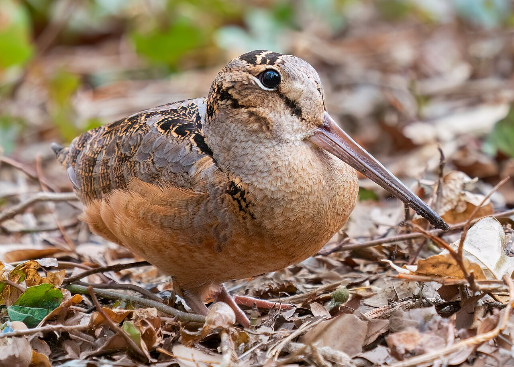

Галерея птиц
На этой странице — фотографии разных птиц с описаниями.

Fringilla coelebs
Певчая птица семейства вьюрковых. Длина тела — около 15 см. Обитает в лесах и парках Европы и Азии.

Scolopax rusticola
Лесной кулик семейства бекасовых. Длина тела — 33–38 см. Ведёт скрытный ночной образ жизни, обитает в сырых лесах.

Caprimulgus europaeus
Ночная птица отряда козодоеобразных. Длина тела — около 26 см. Известен громким «мурлыкающим» пением по ночам.
Все фотографии взяты из открытых источников.